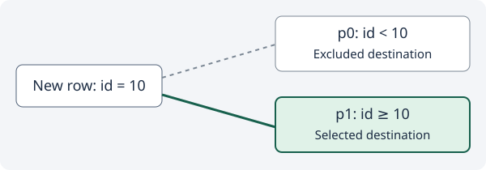

Apply the rule
Our example has two partitions: p0 accepts id < 10; p1 accepts id ≥ 10. A row with id = 10 belongs in p1.

Pruning does not delete rows or remove partitions. For this insert, it rules out a destination. For a read, pruning instead rules out partitions that cannot contribute matching rows.
Recall before revealing
Under these rules, where does a row with id = 9 belong?
Check your answer
p0: 9 is less than 10. For an insert, p1 is excluded as a destination.
Primary source
partition_prune_insert describes its output as the partition to insert into and calls partition_find_partition_for_record. The numeric rules here are a teaching example.
Ask the agent a follow-up whenever wording is unclear.